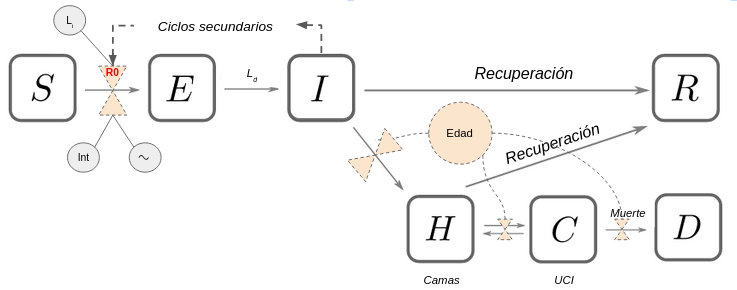

El modelado matemático de epidemias permite explicar y predecir el comportamiento de agentes infecciosos y potencialmente dañinos para las poblaciones humanas (en este caso).
En este caso haremos uso de un modelo clasico de epidemiologia de enfermedades infecto-contagiosas conocido com “SEIR”, de sus siglas: “S” individuos - “E” expuestos - “I” infectados - “R” recuperados.

S-Susceptible, E-expuesto (infectado), I-Infeccioso (que contagia) y R-Recuperado H-hospitalizados, C-críticos (UCI), y D - difuntos.
S -> I modelado por tasa de infección (R0)(R0 afectado por las intervenciones “Int” y la estacionalidad “∿”). Ld: período de latencia; Id:periodo infeccioso.
1 - Las personas susceptibles son consideradas expuestas / infectadas por haber tenido con contacto con personas infecciosas.
2 - Cada individuo infeccioso causa en promedio R0 - infecciones secundarias durante su periodo infeccioso.
3 - La transmisión del virus podría tener una variación estacional que se parametriza con el parámetro “forzamiento estacional” (amplitud) y “mes pico” (mes de transmisión más eficiente).
4 - Los individuos expuestos progresan a un estado sintomático / infeccioso después una latencia promedio
5 - Los individuos infecciosos o se recuperan o progresan a una enfermedad grave (requiriendo hospitalización), y cuya tasa depende de la edad
6 - Los individuos hospitalizados: o bien se recuperan o se deterioran y se vuelven críticos pasando a cuidado intensivo (ICU) (edad - dependiente)
7 - Las personas gravemente enfermas regresan al hospital regular o mueren esto depende de la (edad - dependiente)